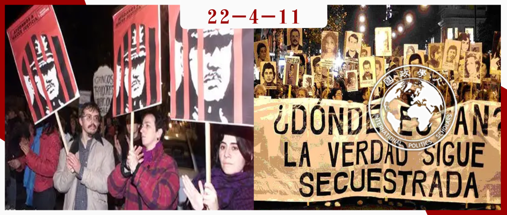

收录于合集

英国对南美独裁者的双标政策：智利和阿根廷
作者： Rodrigo Fracalossi de Moraes牛津大学政治与国际关系部（DPIR）成员，巴西应用经济研究所成员。研究方向主要为南美洲的政治与国际关系。
编译： 邓浩然（国政学人编译员，立命馆大学国际关系部）
来源： Fracalossi de Moraes, R. (2022). Arming a few dictators but not others: The politics of UK arms sales to Chile (1973–1989) and Argentina (1976–1983). The British Journal of Politics and International Relations , 24(2), 324–342. https://doi.org/10.1177/13691481211033192

导读
在俄乌战争的背景下，对于西方国家制裁和武器禁运合法性的讨论愈演愈烈。从一个旁观者的视角来看，西方国家双标政策的虚伪性越来越暴露无遗：对以西方政治家来说，制裁和武器禁运变得政治化，以政治正确为理由达到削弱对手的目的，从另一方面来讲，对于那些西方政府的政治伙伴来说，他们独裁的暴政似乎不能受到西方主流媒体/西方主流社会运动的关注，因而也不会受到相应的制裁或武器禁运的惩罚。 本文将通过英国政府对智利和阿根廷独裁政府双标的武器出口政策揭示西方政治的虚伪性。 当然我们也要看到本文研究案例的特殊性，即在1970年代还没有广泛的有关武器贸易责任的国际准则，因此不能将英国的政策和现今西方国家的政策进行直接的比较。
本文研究了英国的武器出口政策以及影响这些政策的因素。通过研究发现，道义上对自由民主的捍卫确实会影响到西方国家的外交战略和武器出口政策。然而具有讽刺意味的是，民主，人权等概念完全是由西方国家内部自由界定的，因此他们可以自由选择重视或者忽略，政治化或者去政治化一个人权问题。更可悲的是，所谓捍卫人权的努力也通常与政党的形象和政绩挂钩，而非人道主义的关怀。
在俄乌战争的背景下，重新审视西方政府一贯以来的双标做法显得合乎时宜。虽然本文研究的对象是南美国家内部的政权更替，但是 西方国家政治化武器运输的举措能体现他们根深蒂固的政治逻辑和外交政策 。在此研究中还有重要的一个因素，那就是 英国民众对南美国家政权更替的关注程度 如何影响和改变了政府的政策。然而不得不注意到的是，民众对国外问题的关注度很大程度上也取决于官方政策，以及官方政策影响下媒体的关注和侧重点。虽然民众对于人权侵犯问题通常持激烈的批评态度，但是因为媒体“看门人”角色的影响，民众的人道主义关怀也常常受到政府潜移默化的影响，然后最终为某些集团提供了政治武器。
摘要
尽管智利和阿根廷在1970年代都经历了残酷的军事独裁，英国却只在1974年智利政变后对其实施了武器禁运，在1976年阿根廷政变后，英国没有对其实施武器禁运。如何解释这种差异?这一差异揭示了政府决定武器出口的哪些决定性因素?本文将主要使用历史档案证据来说明这种差异是由 英国民众在智利事件后发动的更具影响力的社会运动 导致的，而这在很大程度上是源于 英国左翼对智利民主斗争的更强的认同感 。这些发现表明，共同的价值观或身份认同使得跨国问题更容易引起国内受众的共鸣，从而改变国家的武器出口政策。
编译
01
简介
是什么决定了政府批准、促进或限制武器出口?从理性选择的角度来看，以下战略和经济因素推动武器出口决策: 1.加强自身安全，2. 增加对其他政府的影响力，3. 获得军事或情报设施，4. 与当地精英保持联系，5. 促进获得自然资源供应 。从国内的角度来说，政府可以出口武器来促进经济增长，增加就业，增加硬通货流入，或摊销武器开发的研究成本。
另一些学者强调， 政府依据武器控制和转让规范来决定其出口武器的型号和武器出售的对象 。这部分文献着眼于跨国宣传网络（transnational advocacy network）如何促进有关武器拥有、发展、使用和贸易的责任规范，强调这些网络能够定义或改变被认为是适当的行为。这些文献解释了《渥太华公约》（《关于禁止使用、储存、生产和转让杀伤人员地雷及销毁此种武器的公约》），欧洲武器出口制度，小武器和轻武器国际规范，集束弹药公约和武器贸易条约的出现。这些文献的研究结果表明， 受规范驱动的行动者可能将某些武器的制造或转让视为不适当的 。然而，国际规范和法律很可能受到国内政治动态的调节。由于政府需要授权武器出口，并经常为武器交易提供促进、资助或信用担保，它们经常受到武器制造商、民间社会组织或政党的压力，要求它们提供，限制或禁止武器出口。当涉及到有争议的武器或客户的大型军火交易时，压力尤其大。然而，是什么使得武器出口在政治上成为一个突出的问题?他们在国内的高政治地位对政府行为有什么影响?
02
历史背景
1973年9月，奥古斯托·皮诺切特领导了一场军事政变，推翻了萨尔瓦多·阿连德的人民团结联盟政府。政变及其后的严厉镇压引发了全球抗议浪潮，并产生或扩大了各种社会运动。一个跨国的反皮诺切特联盟出现了，包括公民社会团体、教会、政党、媒体、一些政府和国际组织。这些运动在比利时、东德、法国、意大利、荷兰、苏联、瑞典、瑞士、英国、美国、西德等国家成立或扩大，在一定程度上存在于80个国家。1973年11月，国际特赦组织前往智利，揭露了智利政府镇压的规模和细节。不结盟运动、联合国、国际劳工组织、国际法学家委员会以及其他国际组织和团体也表达了对政变和镇压反对派的愤慨。1975年，联合国人权委员会（UN Commission on Human Rights）成立了一个智利问题工作组，每年报告该国的人权状况。对皮诺切特政权的排斥——以及对其制裁的范围——达到的程度可能仅次于对南非的制裁。
政变期间，智利军方使用英国制造的“霍克猎人”（Hawker Hunter）喷气式飞机向拉莫内达宫（即智利总统府）（La Moneda Palace）投下炸弹，英国和智利的军事关系立即引发争议;因此英国政府必须思考政变后英国是否应该继续向智利出售武器。爱德华•希思（1970-1974）领导的保守党政府承认了智利的新政权，没有实施武器禁运，也没有为智利人的流亡请求提供便利。他遭到了工党和工会的强烈批评，他们认为英国应该制裁智利的新政权，并支持智利反对派。政变后几天，詹姆斯·卡拉汉和工党秘书长罗恩·海沃德会见了外交大臣亚历克·道格拉斯- 霍姆，向他施压，要求他不要承认智利新政府。1973年12月，工会大会（TUC）的一名代表在会见外交部长时，向亚历克·道格拉斯- 霍姆施加压力，要求他中断援助和武器销售，并增加对寻求庇护的智利人的支持。这些压力（以及保守党的反应）不仅使智利的斗争成为英国左翼的主要问题，而且使与智利的团结成为保守党思维模式中的工会的同义词。英国外交官与保守党强调保护英国贸易和投资的必要性，并担忧地看到CSC和皮诺切特政权的负面新闻。
然而，政变6个月后，工党政府上台。1974年3月，外交大臣詹姆斯·卡拉汉宣布武器禁运和取消海军访问。在这种情况下，哈罗德·威尔逊（Harold Wilson）政府做出了类似于1964年英国对南非实施武器禁运（同样遭到保守党的反对）的决定。 1964年关于南非的决定也是在反种族隔离运动领导的一场日益扩大的运动的背景下作出的，这和智利情况很相似。
03
案例分析
为什么英国在1974年对智利实行武器禁运，而在1976年政变后对阿根廷却没有？这种差异之所以令人费解是因为这两个国家的政治暴力水平都很高，而且阿根廷在政变时还表示出了未来可能入侵马尔维纳斯群岛的想法。此外，智利不但是英国重要的铜产地，还是更大的英国武器进口国，因此理论上来说英国向智利出口武器的动机比向阿根廷出口武器的动机更强。从国内政治的角度来说，1976年阿根廷政变时的执政党和1974年对智利实施了禁运的执政党同为英国工党。种种因素让我们不得不疑惑为什么英国政府对于两个国家的独裁政府做出了不同的政治策略。
通过实行单方面禁运，英国放弃了武器销售的潜在经济收益，失去了与智利高级官员接触的机会，并冒着暂停智利铜出口的危险。此外，它还为武器市场上的竞争对手开辟了空间。如何解释这一决定?智利的政治和公民自由状况不可能是唯一的因素，因为英国对阿根廷和扎伊尔等记录同样差或更差的国家的武器出口政策不那么严格。 跨国运动 的存在在一定程度上解释了英国的禁运，但不能解释为什么其他国家没有或后来对智利实施禁运。
全球性的反皮诺切特运动时英国实施武器禁运的重要原因之一 ，但这也解释不了为什么它比其他西方武器出口国更早地实施了禁运（美国于1976实施对智利的武器禁运）。相比之下，美国在1977年对阿根廷实施了禁运（从1978年起生效），而英国只是在福克兰/马尔维纳斯战争开始时才这样做。这些不同的政策表明， 全球性的浪潮会被特定时期英国国内政治的具体特征所调和 。
根据对伦敦国家档案馆中历史文件的研究，本文认为，英国政府对智利实施并维持禁运， 部分原因是由于一个国内宣传网络，其中心是智利团结运动 （Chile Solidarity Campaign 后文省略为CSC）。在英国激烈的社会斗争的背景下，社会激进分子将智利的斗争描述为劳工国际团结的一部分，因而使工会和工党成员更有可能参与进来。激进分子们激发了左派对阿连德政府和智利反对派的同情，从而组成了一个统一战线，把对智利的武器销售变成了一个政治上的突出问题，并把与智利的团结作为一种准则。当智利成为全球左翼和右翼斗争的缩影时，英国的激进分子加入了一个“想象的共同体（imagined community）”，那里的人们反对法西斯主义，捍卫劳工权利。他们对智利斗争的态度也解释了为什么1976年政变后没有对阿根廷实行全面禁运：英国国内没有像智利那样针对阿根廷的社会运动。在阿根廷盛行的庇隆主义（peronism）则更难在英国国内社会找到认同，这影响了人们对阿根廷政变和随后的斗争的看法。
04
研究设计与理论框架
英国对于智利和阿根廷不同的政策至少有两方面的考虑， 一个方面是理性状况下考虑武器禁运对英国的国家利益，另一方面是是国际规范及道德的角度 。在本次研究期间，“英国执政党”这个变量保持不变，这位我们的研究带来了很大的便利。在理性选择的方法下，重点将是英国政府实施禁运的动机和决策的成本效益。从这个角度来看，对智利的禁运和对阿根廷的非禁运都是旨在促进英国利益的战略举措。相比之下，从规范的角度来看，实施禁运是由于智利的残暴政府：英国不应该提供帮助皮诺切特政权继续掌权或杀害/伤害反对派人民的武器。从这一观点来看，向智利出售武器被认为是不适当的，与智利的团结被认为是一种规范——这些都是禁运的主要决定因素。武器市场上的竞争对手从英国的禁运中获益，或者智利仍然从其他供应商进口武器，这些都无关紧要;要点不是关于得失，而是关于做“正确的事”。
如果基于理性选择方法的解释是正确的，就应该有书面证据表明，实施禁运是因为对智利的武器销售被认为对英国的利益或英国的政府政权有害。如果一个规范的解释是正确的，那么应该有记录表明，实施禁运是出于规范驱动的运动和/或因为政府官员认为向智利出售武器将助长侵犯人权或政治镇压——不管这些武器对英国利益的影响如何。为了比较这些潜在解释的有效性，本文在伦敦国家档案馆的政府文件中寻找支持或反对这些解释的证据。重点是来自外交和联邦事务部(FCO)、国防部和总理办公室的文件。由于规定，1988年以后没有任何文件可用，尽管这不是一个重大问题，因为它几乎与皮诺切特政权的结束时间一致。
05
解除皮诺切特政权的武装:如何解释英国的武器禁运?
本文认为， 英国国内的政治动态对英国政府针对智利的武器禁运具有重要作用，而CSC是一个关键角色 。政变后不久，CSC成立，成为由共产党成员迈克尔·盖特豪斯领导的反对皮诺切特政权的人民和组织的中心。它是一个与劳工运动有紧密联系的草根运动。CSC团结团体和民众，争取结束智利的军事政权，特别是工会、部分工党、共产党和学生团体，包括教会、部分媒体、学术界和难民组织。这一机构的形成背后有一定的历史渊源：智利的阿连德政府为左翼（尤其是为英国工党运动）扮演了象征性角色，而这些被阿连德政府启发的人反过来在道义上反对皮诺切特的政变。
左翼政府和社会组织与智利的团结在政变之前就有了根源 ，这解释了为什么对政变有广泛的情绪反应，也解释了为什么反对智利军政府的跨国联盟迅速组织起来。许多左翼人士认为，人民联合政府及其“通往社会主义的和平道路”是民主社会主义充满希望的经历。CSC的主要目标是支持阿连德政府;和解放运动（1970年以前被称为殖民自由运动）。1976年，英国在66个地方设立了CSC委员会，35个学生会在智利“认领”囚犯——通过信件与他们沟通，并向智利当局施压，要求释放他们。在其存在期间，CSC隶属于30个国家工会、85个选区工党（CLPs）、54个贸易委员会和56个学生工会。
英国的反皮诺切特运动是一个更广泛的跨国联盟的一部分，但同时也是一个明显的地方团体。 智利的政变和随后的镇压遭到国际自由工会联合会（ICFTU）的强烈反对。联合国大会（UNGA）经常讨论智利的镇压问题，在1974年至1989年期间，联合国大会通过了18项谴责智利政府的决议（相比之下，没有类似的联合国大会反对阿根廷军事政权的决议）。
尽管哈罗德•威尔逊（Harold Wilson）政府实施了禁运，但它遵守了现有的军舰销售合同，理由是英国可能会失去与其他国家的合同，而且智利也可能削减对英国的铜供应。这在工党内部引起了争议：100多名工党议员签署了一项反对交付军舰的决议；工党国际部呼吁政府重新考虑该法案。此外，英国政府决定不重新安排智利的债务，这是在1974年11月工党大会通过了CSC和工党成员的决议后发生的。CSC认为，这一问题与武器贸易密切相关，因为智利可能利用债务重新安排来分配更多资源用于武器采购。这导致智利政府拖欠英国的债务，因此英国政府也暂停了潜艇的交付。
此外，英国在1974年是对智利实行禁运的唯一西方主要武器出口国。英国外交与联邦事务部部长泰德·罗兰兹(Ted Rowlands)在给英国劳工大会的一封信中表示，“我们的目标一直是，与其他志同道合的国家合作，对军政府施加有效的压力。”尽管他强调与“志同道合的国家”合作，但没有证据表明英国的决定受到了其他国家政府在智利问题上立场的制约。此外，也没有证据表明禁运背后有战略或经济因素——尽管有这些因素，而不是因为这些因素而实施的禁运。因此， 向智利出售武器成为一个“禁忌” 是由一个围绕在CSC周围的倡导网络建立起来的，CSC的权力部分归功于它与劳工运动的有机联系 。
撒切尔夫人上台后，英国的立场发生了变化。她恢复了与智利的外交关系，并解除了用于“外部防御”的各种武器禁运。 1980年7月，英国宇航系统公司的一名代表在给首相的一封信中抱怨暂停武器销售。撒切尔夫人回答说，“从今以后，向智利出口武器的申请将以正常方式处理。” 1980年，英国外交与联邦事务部的一份内部文件强调，他们对智利采取了新政策，在过去的4个月里，100份申请中只有7份被拒绝。工党议员、工会、教会和非政府组织(ngo)批评了撒切尔的决定——压力一直持续到皮诺切特政权结束。
虽然撒切尔夫人部分解除了禁运，但 英国很少提供可用于内部镇压的武器，并维持对各种其他武器的限制 。例如，在一项有关机关枪和吊舱的决定中，英国外交与联邦事务部考虑了来自人权组织的压力，认为“如果这件事被曝光，肯定会有这样的风险，即这笔交易将会招致议会和国家内部的反智游说团体的批评。” 此外，英国政府没有向智利提供杀伤性地雷、装甲车、手榴弹、小型武器和坦克。
06
英国对阿根廷军政权的武器销售政策:为什么比对智利的限制少?
1976年阿根廷政变引发了英国政府内部的担忧：英国的武器是否会加剧国内的镇压，并加强阿根廷的独裁政权。然而，尽管阿根廷的军事独裁统治和智利一样残酷，而且有入侵福克兰群岛或马尔维纳斯群岛的风险，但这些限制从未像针对智利那样严厉。尽管工党政府考虑过实施禁运的可能性，但它决定不这么做，因为与英国外交与联邦事务部的态度一致：出售武器有经济上的好处，禁运可能会加强阿根廷的强硬派，而阿根廷不太可能就比格尔海峡争端攻击智利。然而，英国外交与联邦事务部的外交官们曾就向智利出售武器一事提出过类似的观点，但工党政府还是实施了武器禁运，这表明 其他因素发挥了决定性作用 。例如，1978年英国向阿根廷出口了一些不能卖给智利的武器；1979年，詹姆斯•卡拉汉(James Callaghan)政府邀请阿根廷官员参加皇家海军装备展(所有费用由国防部支付)，而智利人没有被邀请。虽然英国外交与联邦事务部对邀请阿根廷代表团表示担忧，但决定在7个南美国家(阿根廷、玻利维亚、巴西、智利、哥伦比亚、巴拉圭、委内瑞拉)中，只有智利人和巴拉圭人不能被邀请。
工党政府和英国外交与联邦事务部外交官意识到，在政治压迫和侵犯人权方面，阿根廷的军事独裁与智利相似，甚至更糟——英国对这两个国家的不同政策是一种矛盾。1979年，泰德·罗兰兹断言英国是在向一个“肮脏的独裁政权”出售武器，这个政权的人权记录比智利还要糟糕。外交大臣大卫·欧文(David Owen)强调，阿根廷政权的人权记录比智利还糟糕，而且还可能会在福克兰群岛问题上与我们发生冲突。尽管英国外交与联邦事务部的外交官们强调部长们并没有试图“阻止与阿根廷就国防设备供应进行谈判， 他们后来质问道，‘为什么政府允许向阿根廷出售武器，却不允许向智利出售?”
对智利和阿根廷不同的武器销售政策可以部分解释为，智利的政变对英国左派来说是一个震惊的消息，而阿根廷的政变则没有。虽然智利的政变推翻了一个民主社会主义政府，但被推翻的阿根廷政府不太值得哀悼，因为阿根廷原领导人并不能算是民主的左翼领导人。这使得阿根廷随后的内部斗争对英国左派的吸引力降低，从而影响了英国反对阿根廷军事独裁的运动的规模。尽管民间社会团体（包括CSC和其他组织，他们向政府施压，要求停止武器销售）提出了对阿根廷的担忧，但是英国没有形成支持阿根廷斗争的统一战线。 在缺乏强有力的国内宣传网络的情况下，英国政府受到的压力、对“看门人”的影响以及有关向阿根廷出售武器的媒体报道都比较少 ——即使在工党政府执政期间也是如此。
撒切尔夫人政府维持了对阿根廷的各种武器供应，并批准了新武器交易的谈判，包括前工党政府没有批准的武器销售——比如主战坦克。在1981年一次由不同部委代表参加的会议上，英国外交与联邦事务部因出于人权考虑而未授权武器交易而受到批评。然而，英国外交与联邦事务部的一位代表解释说，他们已经适应了新的指导方针： “主要的限制现在主要是基于安全方面的理由” ，授权军售的标准已经 从“可能”改为“可能被用于侵犯人权” 。
07
智利和阿根廷的不同
针对智利的运动得到了包括工会和工党成员在内的广泛联盟的支持。与这些参与者的联系使“看门人”更有可能被纳入反皮诺切特的网络，有助于提高智利斗争的政治重要性，并使之成为工党（和保守党）领导层关注的问题。1973年智利政变后的5年里，英国议会下院就英国对智利军事政权的政策进行了18次辩论，而1976年政变后的5年里只有一次关于阿根廷的辩论。此外，那些反对阿根廷的运动没有一个可以形成网络的中心：在阿根廷开展活动的活动人士缺乏与有影响力的人的联系。
此外，智利的政变——以及随后的斗争——使英国沿着原有的政党路线分裂。一个“共同的意义框架”将大多数英国左派团结到智利的反对派中，使智利的斗争更有可能引起英国决策者和公众的共鸣。CSC从左翼团结、民主社会主义、反帝国主义、反法西斯主义和劳工团结的角度来组织反皮诺切特运动，由于阿连德政府在政变前后对左翼的象征性重要性，该运动在英国找到了肥沃的土壤。反对阿根廷的运动则没有那么吸引人，部分原因是很难将其视为左翼的重要事业： 阿根廷原领导人不是左翼领导人，也没有得到左翼的同情。 这使得对1976年政变的谴责以及对反阿根廷军事政权的组织活动的吸引力降低。
总之， 尽管智利和阿根廷的政权相似，工党和保守党政府都更愿意向阿根廷出售武器，而不是向智利出售 。从外部因素来说， 国际上对皮诺切特政权的压力更大、更全面，拉丁美洲其他任何军事政权都无法比拟 。然而，英国政府对智利和阿根廷行为的不同，不仅是因为这个因素，还因为 国内更强大的宣传网络发起了孤立皮诺切特政权的运动 。这表明，政府在武器销售方面的行为不仅取决于潜在客户的客观人道主义状况——以及跨国活动的规模——还取决于国内团体运动的目的。
08
结束语
英国对智利（1973-1989年）和阿根廷（1976-1983年）军售的政治比较表明， 国内运动的强度和国内政治环境的特点调节了跨国运动的影响 。它们决定了国际规范是否会改变国家行为，这种改变的时机，以及规范在政策中的嵌入程度。反对皮诺切特政权的跨国运动比反对阿根廷军事独裁的运动规模更大，这在一定程度上解释了为什么英国对皮诺切特实行禁运，而不对阿根廷实行禁运。尽管反对皮诺切特政权的联盟是跨国的，但CSC不仅仅是全球反皮诺切特斗争的一个地方“分支”；它是一个独特的英国团体，通过操纵英国的政治制度来影响政府的政策。直到皮诺切特政权的结束，CSC、工党成员、工会和英国的其他团体仍然积极地反对皮诺切特，并对政府行为施加影响——无论是在工党政府还是在撒切尔的首相任期内。
这项研究还表明， 宣传运动可以导致国家单方面改变行为 。尽管英国政府由于国内和跨国政治动态的相互作用而对智利实施了禁运，但英国政府并没有投入太多精力与其他政府进行协调，形成共同立场。这是值得注意的，因为单方面限制武器销售使武器出口国相对于其他国家处于不利地位，同时可能对武器进口国的总体军备水平产生很小或没有影响。
词汇整理
跨国宣传网络
transnational advocacy network
全球性的反皮诺切特运动
anti-Pinochet movement
缩影 microcosmos
庇隆主义 peronism
智利阿连德总统所属的人民团结阵线政府
Popular Unity government of Salvador Allende
审校 | 赵旌宏
排版 | 陆霜滢 苏伊文
文章观点不代表本平台观点，本平台评译分享的文章均出于专业学习之用, 不以任何盈利为目的，内容主要呈现对原文的介绍，原文内容请通过各高校购买的数据库自行下载。

国政学人
支持学术公益与知识传播
微信扫一扫赞赏作者 __赞赏
已喜欢，对作者说句悄悄话
取消 __
发送给作者
发送
最多40字，当前共字
上一页 1/3 下一页
长按二维码向我转账
支持学术公益与知识传播
受苹果公司新规定影响，微信 iOS 版的赞赏功能被关闭，可通过二维码转账支持公众号。